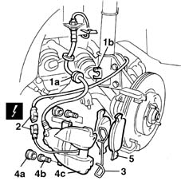

3310A62 front brake pads - replace with wheels removed
- Path
- Procedures > 33 BRAKING SYSTEM > 3310 DISC BRAKES > 3310A FRONT DISC BRAKES > 3310A62 front brake pads - replace with wheels removed
- Kind
- repair procedure (removal / refitting; the operation number is the code)
- Applies to
- all engines; all production periods
- Interactive page
- https://sloeber94.github.io/elrnDB-fMltpl/en/#/2891580
Applies to: all engines; all production periods
 Removing
Removing
 Refitting
Refitting1. Release the rubber retainer (1a) for the brake pipe from the housing (1b) on the suspension damper.
2. Disconnect the electrical connection for the brake pad wear cable.
3. Remove the spring fixing the brake caliper to the bracket.
4. Remove the rear bolt covers (4a), undo the bolts (4b) underneath, then remove the front brake caliper (4c).
5. Remove the brake pads from the caliper and replace them.

Applies to: all engines; all production periods
Refitting
RemovingFit the new brake pads in the caliper.
Fit the front brake caliper on the disc.
Fix the brake caliper tightening the two rear fixing bolts to the recommended torque.
 | Fastening | Component | Ø | Value (daNm) |
|---|---|---|---|---|
- | Bolt | FRONT BRAKE CALIPER ASSEMBLY | M8 | 2.4 |
Fit the caliper fixing spring in the correct position.
Connect the brake pad wear electrical connection.
Secure the pipe to the suspension damper.